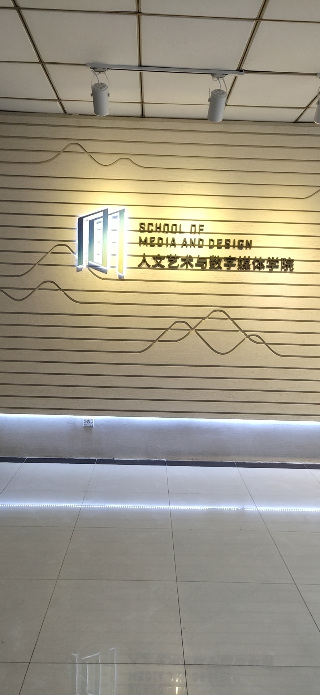

2017.10-2019.06 辅导员助理 工作内容： 1.参与组织一些活动，分发通知 2.负责贫困生的工时管理与上报 3.参与奖助学金的评定审核
影视以及娱乐八卦的深度爱好者，对热点新闻事件有较高的敏感度和关注度。 喜欢电影电视和综艺节目，对事情有很强的好奇心，乐于挑战。 喜欢电子竞技，特别是团队之间合作的那种精神。 热爱体育运动，喜欢观看体育类节目。 有较强的执行能力较强，对待事情有恒心，有耐心，善于沟通。 热爱冒险，积极乐观。
